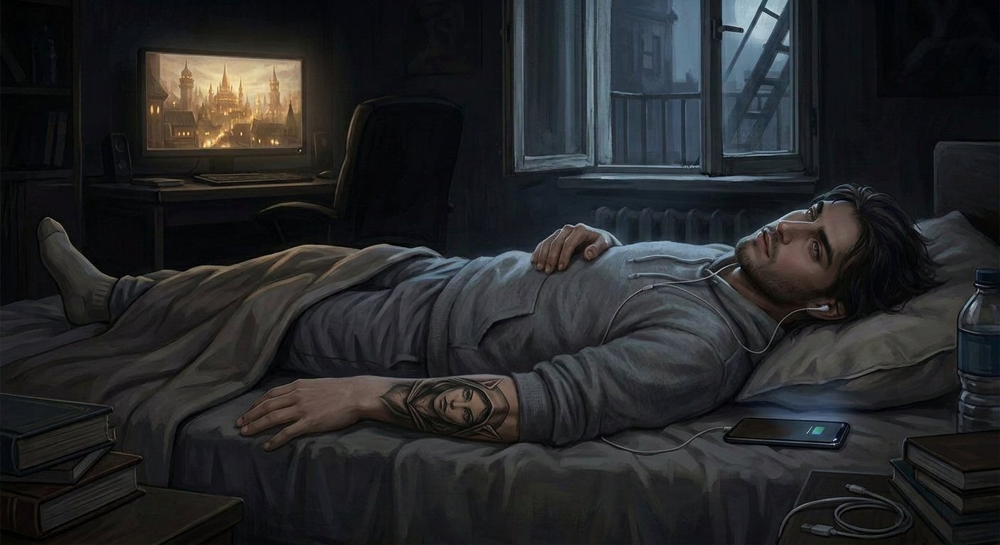

Antes
O último dia do outro lado
A janela do quarto não fechava direito.
Fazia dois anos que não fechava direito, e Nathan já tinha desistido de tentar consertar. Era um daqueles defeitos que existem no limite entre o incômodo e a aceitação — a fresta era pequena o bastante para ser ignorada na maior parte do tempo, e grande o bastante para deixar entrar um fio de ar gelado nas madrugadas de inverno, aquele fio que encontrava sempre o mesmo caminho entre a cortina e a parede e ia direto para a nuca de quem estivesse deitado na cama.
Nathan dormia do lado esquerdo. Sempre dormiu. Não por preferência — por geografia. O lado esquerdo era o lado da janela, e se ele ia receber o fio de ar na nuca de qualquer jeito, preferia que fosse de frente, onde podia ignorar, em vez de costas, onde não podia.
Pequenas lógicas de quem mora sozinho.
O apartamento era pequeno. Um quarto, uma sala que era também cozinha, um banheiro com azulejo amarelo dos anos setenta que ele nunca ia reformar porque não era dele. A mobília era o mínimo: cama de solteiro, mesa de trabalho, cadeira de escritório com uma roda quebrada, um sofá que tinha vindo de segunda mão e que tinha um afundamento no meio que tornava impossível sentar reto. E o computador.
O computador era a coisa mais cara do apartamento. E a mais importante.
✦
Naquela terça-feira, Nathan acordou às sete e quinze.
Não porque tinha闹钟. Porque o vizinho do andar de cima tinha o hábito de arrastar uma cadeira às sete e quinze, e o som — aquele scrrrr de madeira contra piso — atravessava o teto fino e entrava direto no ouvido de Nathan como se fosse um despertador personalizado, cruel e sem botão de soneca.
Ele se levantou. Descalço — o chão estava frio, era inverno, e o aquecimento do prédio era do tipo que existia no papel mas não na prática. Foi até a cozinha. Fez café. Não era um café bom — era café de supermercado, o mais barato, feito num filtro de pano que ele lavava uma vez por semana e que já tinha uma cor que não era mais marrom nem mais branca, era algo entre os dois que ele preferia não examinar de perto.
Mas funcionava. Café não precisa ser bom. Precisa ser quente e ter cafeína.
Ele tomou de pé, encostado na pia, olhando pela janela da cozinha — que essa fechava direito — para o prédio do outro lado da rua. Um prédio cinza, de seis andares, com uma antena parabólica torta no telhado e uma janela no terceiro andar que tinha uma cortina vermelha que ele via todas as manhãs e que, por alguma razão, sempre o fazia pensar em Silvermoon.
Silvermoon. A cidade dos elfos sangrentos em World of Warcraft. Torres douradas, céu avermelhado, música de harpa. O oposto absoluto de um prédio cinza com antena torta numa cidade qualquer num inverno qualquer.
Ele sorriu. Meio sorriso. O tipo de sorriso que quem mora sozinho dá quando pensa em algo que ninguém mais está ali para ver.
✦
O trabalho era remoto. Algo com dados, planilhas, relatórios que ninguém lia e reuniões que poderiam ter sido e-mails. Nathan fazia o que precisava ser feito, no horário que precisava ser feito, e depois fechava o laptop e esquecia que aquilo existia. Não era paixão. Não era ambição. Era o que pagava o aluguel e mantinha a geladeira com alguma coisa dentro e permitia que ele comprasse, de vez em quando, uma skin nova na loja do jogo que não dava vantagem nenhuma mas que era bonita.
Ele trabalhou das nove ao meio-dia. Almoçou — macarrão instantâneo com ovo, a refeição oficial de quem mora sozinho e não aprendeu a cozinhar direito. Trabalhou mais um pouco. Respondeu e-mails. Fez uma call em que disse "concordo" e "pode ser" e "vou verificar" nas horas certas, e ninguém percebeu que ele estava pensando em rota de farm em Un'Goro enquanto dizia essas coisas.
Às cinco da tarde, fechou o laptop.
E o dia dele começou de verdade.
✦
Nathan jogava World of Warcraft desde os quinze anos.
Não era vício — ele não gostava da palavra. Era hábito. Era ritual. Era a coisa que ele fazia quando o mundo lá fora exigia demais ou de menos, e ele precisava de um lugar onde as regras fossem claras: mate o monstro, pegue o loot, suba de nível, repita. Um lugar onde o esforço tinha recompensa visível, diferente do escritório, onde o esforço tinha como recompensa mais esforço.
Ele jogava de Horde. Sempre jogou. Não por estratégia — por estética. Os orcs eram mais bonitos. Os mortos-vivos tinham mais personalidade. E Silvermoon, a cidade dos elfos sangrentos, era o lugar mais bonito que já tinha sido inventado por mãos humanas dentro de uma máquina.
E Sylvanas.
Sylvanas Windrunner. Rainha Banshee. General das Sombras. A personagem mais complicada, mais trágica, mais fascinante de todo o universo do jogo. Traída, morta, ressuscitada contra a vontade, forçada a servir ao próprio assassino, libertada, vingada, e depois — dependendo de quando se parava de contar — heroína, vilã, ou as duas coisas ao mesmo tempo.
Nathan não era do tipo que se apaixonava por personagens de jogo. Ele sabia a diferença entre ficção e realidade. Sabia que pixels não eram pessoas e que lore não era vida. Mas tinha algo na Sylvanas — na história dela, no peso que ela carregava, na solidão que ela disfarçava de força — que tocava num lugar dele que ele não conseguia nomear.
Aos vinte e três anos, ele fez a tatuagem.
Não foi impulso. Foi quatro anos de certeza. Desde os dezenove, quando ouviu Lament of the Highborne pela primeira vez — sozinho, naquele mesmo quarto alugado, na semana em que tinha perdido praticamente tudo que achava que definia sua vida — e sentiu algo se partir dentro dele que não era tristeza, era reconhecimento. Como se aquela música fosse sobre ele. Como se aquela melodia de cordas e vozes élficas estivesse descrevendo um sentimento que ele tinha mas não sabia que tinha, até ouvir.
A tatuagem ficou no antebraço direito. O rosto de Sylvanas em preto e cinza. Capuz caído sobre a testa. Olhar levemente baixo. Boca naquela linha que não decidia se ia falar ou desistir de falar. O artista tinha acertado tudo — a curva do maxilar, a sombra sob os olhos, a textura do cabelo. Quatro anos no braço. Todos os dias. Sem arrependimento.
Quando alguém perguntava — e alguém sempre perguntava — ele dizia que era de um jogo. E quando a pessoa fazia aquela cara de "tatuagem de jogo?", ele dava de ombros e dizia:
— Tem gente que tatua o rosto de um parente. Eu tatuei o rosto de alguém que eu gostaria de conhecer.
E as pessoas riam. Porque achavam que era piada.
E Nathan não dizia que não era.
✦
Naquela noite — a última, embora ele não soubesse — ele jogou até tarde.
Não era uma noite especial. Não tinha raid, não tinha evento, não tinha nada além de um personagem parado em Silvermoon, olhando para as torres douradas e ouvindo a música ambiente. Ele não estava jogando ativamente — estava existindo dentro do jogo, do jeito que se existe dentro de um lugar que se conhece tão bem que não precisa mais de mapa.
O vizinho tocou violão às onze. Como sempre. Um violão desafinado tocando algo que poderia ser Legião Urbana ou poderia ser nada, e que atravessava a parede fina do mesmo jeito que a cadeira do andar de cima atravessava o teto.
Nathan não se incomodou. Naquela noite, não. Naquela noite ele estava em Silvermoon, e o violão desafinado do vizinho era só mais uma camada do mundo que ele estava deixando para trás sem saber.
À meia-noite e meia, ele fechou o jogo.
Escovou os dentes. Lavou o rosto. Vestiu o moletom cinza — aquele com o zíper meio quebrado e a etiqueta que pinicava na nuca — e a calça de pijama. Enfiou o pé esquerdo na meia — só o esquerdo, porque era inverno mas não era tão inverno assim, e porque Nathan era o tipo de pessoa que usava uma meia só quando não estava com vontade de procurar o par.
Deitou.
O travesseiro estava do jeito que ele gostava — levemente amassado no centro, formando um buraco que se encaixava na cabeça como se fosse personalizado. O fone de ouvido estava preso entre o travesseiro e o colchão, como sempre. Ele enfiou o fone no ouvido — só um lado, porque o outro lado era para ouvir o mundo, caso o mundo precisasse dele durante a noite, embora nunca precisasse.
Deu play.
Lament of the Highborne.
A música começou. Cordas primeiro. Depois a voz — aquela voz feminina, élfica, antiga, cantando numa língua que ele não entendia mas que sentia. Que sentia no osso. No peito. No lugar onde a tatuagem estava, como se a tinta respondesse à melodia, como se o rosto dela no braço dele estivesse ouvindo também.
Ele olhou para o teto. O teto era branco, com uma mancha de umidade no canto que parecia um mapa de algum lugar que não existia. A janela não fechava direito, e o fio de ar gelado encontrou a nuca dele, como sempre.
E Nathan pensou — de todas as coisas, a última coisa que ele pensou antes de dormir — que gostaria de ver Silvermoon de verdade. Não a do jogo. A de verdade. Se é que existia uma de verdade em algum lugar, em algum universo, em alguma dobra da realidade que a gente não consegue ver.

E pensou que se existisse, ele gostaria de estar lá.
E pensou que se estivesse lá, ele gostaria de encontrar a mulher do rosto tatuado no braço dele e dizer que a música era bonita. Que ele ouvia toda noite. Que significava alguma coisa que ele não sabia explicar.
Pensou isso.
E dormiu.
✦
O fone ainda estava no ouvido quando ele foi embora.
Não houve portal. Não houve luz. Não houve transição, nem espiral, nem qualquer uma das coisas que acontecem nos filmes quando alguém é transportado para outro mundo. Houve só o sono — profundo, pesado, sem sonhos — e depois, em algum momento entre o último acorde de Lament of the Highborne e o primeiro raio de sol que nunca chegou, porque lá não havia sol, porque lá não havia nada além de cinza e zumbido e pedra fria —
Nathan acordou.
E o mundo tinha acabado.
Ou melhor: o mundo tinha mudado. O teto branco tinha sumido. A mancha de umidade tinha sumido. O travesseiro, a cama, o apartamento, a janela que não fechava direito, o vizinho do violão, a cidade inteira — tudo tinha sumido, como se nunca tivesse existido, como se tivesse sido descartado, jogado fora, colocado num lugar feito de coisas que o universo não precisava mais.
E Nathan abriu os olhos.
E olhou para cima.
E não havia céu.